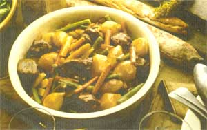

MOTHER'S KITCHEN
Stews and Chilies to Chase the Chills
Stews and chilies have always been a favorite in my family. While none of the men have ever expended any real time or energy in the kitchen (raiding the fridge at 3 a.m. notwithstanding), all seem to have a good recipe up their sleeves.
And with good reason. What better on a cold day that a steaming pot of flavorful meat, fresh vegetables, and a rich stock that melds like slow-simmered gravy. Ladled over rice or noodles, stews and chilies are hearty fillers that require minimal time and effort.
When my father and his wife came to visit recently, I threw on a pot of my chili (I say "my" with some significance, as every chili served in our family has many variations, depending who stocked the pot) in the morning and left it to simmer while we spent the afternoon skating on the pond.
Chilies and stews stand on their own, with such a commanding presence that it takes only a hearty starch to make a full meal. (I used to serve a green salad with my stews and chilies for Sunday supper-only to realize, four or five times into this routine, that my lovely greens sat mostly untouched.)
So grab your biggest pot, dash to the root cellar, and throw a loaf into the oven. Then head outside and sled down the hill while dinner slow-cooks to simmered perfection.
4 cups water
3 8-ounce cans tomato sauce
2 5-ounce cans tomato paste
2 cups chopped onions
1 cup chopped celery
2 tablespoons chili powder
2 tablespoons fresh lemon juice
1 tablespoon sugar
2 bay leaves
4 minced garlic cloves
2 teaspoons cinnamon
1 teaspoon salt
1 teaspoon black pepper
1 teaspoon ground cumin
1/2 teaspoon ground allspice
1/4 teaspoon ground cloves
2 pounds ground beef
4 cups kidney beans Toppings: grated cheddar cheese chopped onion sour cream saltines
In a stockpot, combine all of the ingredients except the ground beef and the beans. Cover and bring to a boil. In a frying pan, brown the beef and crumble with a spatula.
Drain off the fat and add the meat to the stockpot. Bring to a boil again. Add the beans and bring to a boil once more. Then reduce the heat and simmer for 2 hours. Discard the bay leaves. Ladle into shallow soup bowls.
Pass the cheese, onions, sour cream, and saltines. (Proper layering order of toppings in our family was always cheese, onion, sour cream, with crumbled saltines over each individual file or, as I used to do when I was a kid-requiring more patience than it's worth-piling a bite of chili onto each saltine). Serves 8 generously.
2 tablespoons olive oil
6 thick slices of farmer's bacon
2 pounds boneless beef chuck, cut into 1-inch cubes
Freshly ground black pepper
10 small leeks (white half with a bit of green), well rinsed
6 carrots, peeled and cut into 3-inch lengths
2 cups green beans, ends trimmed and snapped in half
6 parsnips, peeled and cut into 3-inch lengths
2 tablespoons sugar
11/2 cups beef stock, homemade or canned
11/2 cups of table-quality Burgundy
2 tablespoons butter
2 tablespoons red currant jelly
2 teaspoons dried thyme leaves, crumbled
8 small red new potatoes, halved
6 minced garlic cloves
6 ripe plum tomatoes, seeded and chopped
1/2 cup chopped Italian parsley
Preheat the oven to 350°F. Heat the olive oil in a large skillet. Add the bacon, and cook over medium heat until fat is rendered, 4-5 minutes. Using a slotted spoon, transfer the bacon to a heavy flameproof casserole. Brown the beef in the same skillet, in small batches, over medium-high heat. Sprinkle the beef with pepper as it is cooking. Transfer the beef to the casserole with the bacon.
Place the leeks, carrots, green beans, and parsnips in the same skillet. Sprinkle with the sugar and sauté over medium heat to caramelize them slightly, 6-8 minutes. Remove the vegetables from the skillet and set aside.
Add the stock and wine to the skillet and bring to a boil, scraping down any brown bits. Swirl in the butter, red currant jelly, and thyme. Cook for 1 minute, then pour over the meat in the casserole and bring the mixture to boil. Cover, transfer to the oven, and bake for 45 minutes.
Remove the casserole from the oven and add the reserved vegetables. Add the tomatoes and all but one tablespoon of the parsley. Stir gently, adjust the seasonings, and return the casserole to the oven. Bake uncovered until the beef is tender, 45 minutes. Garnish with the remaining 1 tablespoon parsley, and serve. Makes 6 portions.
3 pounds ground beef
3 pounds cubed round steak
2 28-ounce cans stewed tomatoes
1 large can V-8
2 11/2-ounce boxes onion soup mix
1 large Spanish onion, chopped
3 stalks celery, chopped
2 green peppers, chopped
1/2 cup white vinegar
2 cloves garlic, crushed
1 bay leaf
3 ounces chili powder
1/4 cup barbecue sauce
1/4 cup catsup
4 tablespoon Tabasco sauce
2 teaspoons cumin powder
2 teaspoon instant bullion cubes
2 teaspoon salt
1 teaspoon oregano
1/2 teaspoon paprika
1/2 teaspoon black pepper
1 cup red pepper, chopped
1 cup beer
1/2 cup medium-hot salsa
Brown beef and sauté onions and peppers. Put in a large, ovenproof cooking pot and place in a preheated 300°F oven. Heat for 3 or 4 hours and stir occasionally until desired thickness is reached. Makes 6 quarts.
Canola oil
3 onions, chopped
3 green peppers, chopped
3 cloves minced garlic
1/2 pound hamburger
2 1-pound cans stewed tomatoes, undrained
1 6-ounce can tomato paste
2 teaspoons chili powder
2 bay leaves
1 teaspoon cumin
1 teaspoon basil pinch of cayenne kidney beans to taste
In 1/2" of canola oft, sauté onions, green peppers, and garlic until soft and reserve. Brown the meat and drain. In a stockpot, add all remaining ingredients and stir. Add meat and vegetables. Simmer for 30 minutes, then add kidney beans to taste. Cook long enough for beans to be heated through, 20 minutes. Serve with raw onions and saltines.
11/4 pound coarse ground chuck
11/4 pound pork, cut into 1/4" cubes
1/2 pound ground turkey
1 15-ounce can tomato sauce
1 15-ounce can heavy tomato paste
2 large red onions, chopped
5 cloves garlic, chopped
1 green pepper, chopped
1 4-ounce can of green chilies, diced
1 can beer
1/4 teaspoon Tabasco sauce
1 tablespoon Worcestershire sauce
1 jigger tequila
3 tablespoon chili powder
1 tablespoon ground cumin
1 teaspoon ground oregano
1 tablespoon salt
2 teaspoon paprika
1 ounce of baking chocolate
1 cup shredded jack cheese
Brown beef, pork, and turkey in 1/4 cup of bacon grease or oil. Add to a stockpot. Stir in the tomato sauce, stir, and simmer on low heat. Sauté onions, red pepper, and garlic until tender (do not brown), then add to the pot along with diced green chilies. Place beer in a separate bowl and add Tabasco, Worcestershire, tequila, chili powder, cumin, oregano, salt, and paprika. Stir until smooth and add to pot, mixing well. Add the baking chocolate and stir in when melted. Simmer 2 to 3 hours. Before serving, stir in the jack cheese.
|
 |
|
|